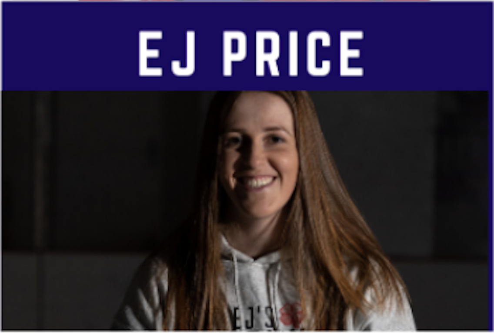

<div>
    <table style="border-style: none;">
        <tr>
            <td>
            </td>
            <td>
                <div style="font-family: Arial; font-size: 18px; color: rgb(54, 96, 146);">
                    <p> EJ Price played in the GTHL for the West Mall Lightning and the Etobicoke Canucks.  She transitioned to girl’s hockey and played Junior in the PWHL for the Burlington Barracudas and Mississauga Chiefs.  EJ went on to play Division I in the NCAA for Robert Morris University.</p>

                        <p>After a four year stint in the NCAA, she was drafted 36th overall by the Markham Thunder in the CWHL.</p>
                        
                        <p>EJ specializes in the development of female goalies at all levels out of the Powerplay Hockey Training Center.
                        </p>

                </div>
            </td>
        </tr>

    </table>

</div>